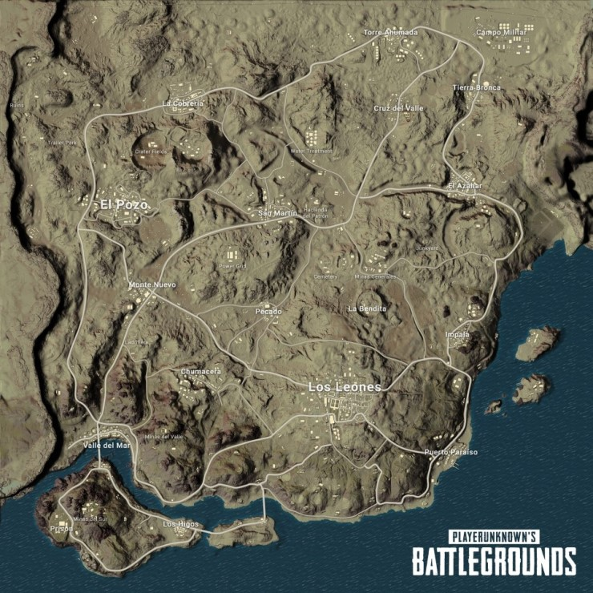

배틀그라운드 오픈과 함께 제공된 최초의 맵으로, PUBG 한국 지사가 만들었다. 흑해에 있는 러시아의 가상의 섬이다. 개발진이 Q&A에서 공개한 에란겔 맵의 배경 설정에 따르면, 이 섬은 1950~60년대에 소련이 군사 시설 및 실험 시설을 설치했으나 지방 자치 운동가들이 섬을 되찾기 위해 저항 운동을 벌이는 바람에 결과적으로 버려진 섬이라고 한다. 게임상에서 시간이 지남에 따라 경기 지역을 좁혀오는 자기장은 당시 소련군이 저항 운동을 벌이는 사람을 제압하기 위해 사용하던 것이라고 한다. 에란겔에는 11곳의 크고 작은 도시가 존재한다. 핵 발전소, 군사기지, 사격장, 수몰된 마을, 항구, 유적지, 지하벙커, 채석장 등 다양한 건물이 있다. 바다 주변에는 험한 암초지형이 있는 곳이 많은데, 바위가 듬성듬성 있어서 싸우다 발을 헛디디면 다신 못 빠져나오거나 그대로 죽는 사례도 보고되고 있다. 심지어 집 안의 가구들 사이에 끼어서 움직이지 못하는 경우도 있다. 지역의 구도가 남한을 닮았다는 주장이 존재한다.

배틀그라운드 PC 1.0 버전 출시와 함께 추가된 두 번째 맵이며, PUBG 미국 지사가 기획, 제작한 맵이다. 멕시코에 있는 가상의 지역이며 한때 인기 많은 여행지였으나 전쟁으로 인해 사막화되었다는 배경을 지니고 있다. 실제로 건물에 걸려있는 달력이 1963년 1, 2월에서 멈춰 있다. 개발진은 미라마에 특수 기상효과로 모래 폭풍이 추가될 것이라고 밝혔다. 본래 '코로나도 계곡'이라는 이름으로 공개되었지만 출시 전에 이름이 미라마로 변경되었다. 또한 이름을 변경하면서 맵 내의 지명 전체를 스페인어식 지명으로 변경하였다. 덕분에 El, Los, La 어쩌구 하는 접미어가 많이 붙어서 스페인어에 익숙한 화자가 아니면 지명을 말하는데 애로사항이 꽃핀다.
